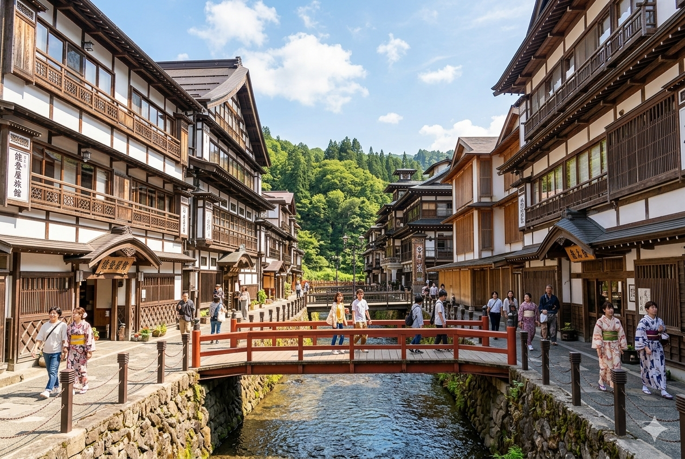
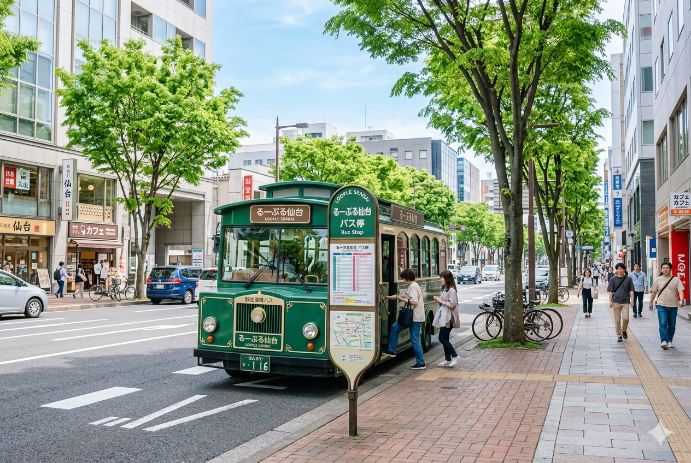

計畫去仙台，卻被「東北好像很遠、交通好像很複雜」勸退了嗎？其實仙台超好上手。這篇就用一條實際可行的 3 天 2 夜路線帶你走一遍：第一天泡進大正浪漫的銀山溫泉，第二天去日本三景之一的松島吹海風，第三天用超方便的 Loople 環市巴士把市區景點一次收集完。
行程總覽
先看整體節奏，再往下看每天細節：
| 天數 | 主題 | 重點 |
|---|---|---|
| Day 1 | 銀山溫泉 | 大正浪漫溫泉街、住一晚泡湯 |
| Day 2 | 松島 | 日本三景、遊覽船、瑞巖寺 |
| Day 3 | 仙台市區 | Loople 環市巴士串聯景點 |
整趟以仙台車站為中心進出，動線不繞路，第一次來也不會慌。
Day 1：走進大正浪漫的銀山溫泉
銀山溫泉最迷人的，是那條沿著溪流、兩側都是三、四層木造旅館的老街。到了傍晚煤氣燈一亮，配上冬天的雪，整條街就像穿越回一百年前，是很多人心中「一生要去一次」的溫泉鄉。
怎麼去：從仙台車站搭 JR 到「大石田站」，再轉搭往銀山溫泉的巴士（約 40 分鐘）。巴士班次不多，出發前一定要先查好時刻，銜接好班次。
建議這樣玩：
- 早點出發，下午抵達，先在溫泉街散步、拍照
- 住一晚是精華：入夜後的煤氣燈街景，只有住客能慢慢享受
- 泡湯、吃頓旅館會席料理，把腳步放慢
小提醒：銀山溫泉街區很小、旅館熱門，尤其冬天旺季，一定要提早訂房，否則常常客滿。

Day 2：日本三景——松島
第二天從溫泉鄉回到仙台，轉往松島。松島灣裡散布著兩百多座長滿松樹的小島，自古就是「日本三景」之一，海景開闊又療癒。
怎麼去：從仙台車站搭 JR 仙石線到「松島海岸站」，車程約 40 分鐘，下車走一小段就到海灣邊。
必做清單：
- 搭遊覽船：從海上看島群是松島的招牌玩法，班次多、航程約 50 分鐘。
- 逛瑞巖寺：伊達政宗打造的名剎，古木參道很有氣氛。
- 走福浦橋 / 五大堂：紅色長橋通往小島，是經典拍照點。
- 吃烤牡蠣：松島是牡蠣產地，海岸邊小店現烤現吃最對味。
松島半天就能玩得很充實，傍晚再搭車回仙台市區過夜，銜接第三天的行程。
Day 3：Loople 環市巴士，市區一票玩到底
最後一天留給仙台市區。這裡的神器叫 Loople 仙台——一台復古造型的循環觀光巴士，把市區主要景點串成一圈，跟著坐就對了。
怎麼玩最划算：買 Loople 一日券。不但巴士無限次搭乘，很多景點還能憑券享入場折扣，只要當天會去兩、三個點，買一日券幾乎穩賺。
沿線可以安排：
- 仙台城跡（青葉城）：伊達政宗騎馬像＋居高臨下的市區展望
- 瑞鳳殿：伊達政宗的華麗靈廟，雕飾非常精緻
- 大崎八幡宮：國寶級的桃山風格神社
- 逛累了就在市中心的一番町商店街買伴手禮、吃牛舌收尾
牛舌是仙台名物，這趟最後一餐，就用一份炭烤厚切牛舌畫下句點吧。

幾個實用小提醒
- 交通票券：如果會從東京往返，先評估 JR East Pass（東北地區）划不划算；市區則靠 Loople 一日券。
- 季節：銀山溫泉冬天雪景最美，但也最冷、最難訂房；怕冷怕滑可選春秋。
- 抓好巴士時間：銀山溫泉、Loople 都是巴士接駁，先把時刻表存進手機最安心。
順手記一下這趟花了多少
旅遊最容易失控的就是預算。像這種多天行程，我習慣一路把交通、住宿、餐費隨手記下來，回國後就知道「錢花在哪、下次怎麼抓更準」。這其實跟理財是同一套邏輯——先看清楚，再優化。
我自己平常也是用做的財務管理系統在記帳，出國時一樣派上用場。有興趣的話，之後會再分享它的用法。
仙台的好，就在於「不趕」也玩得到精華。溫泉、海景、市區，三天剛剛好。
祝你玩得開心，記得把美好也把預算一起收好 🐾